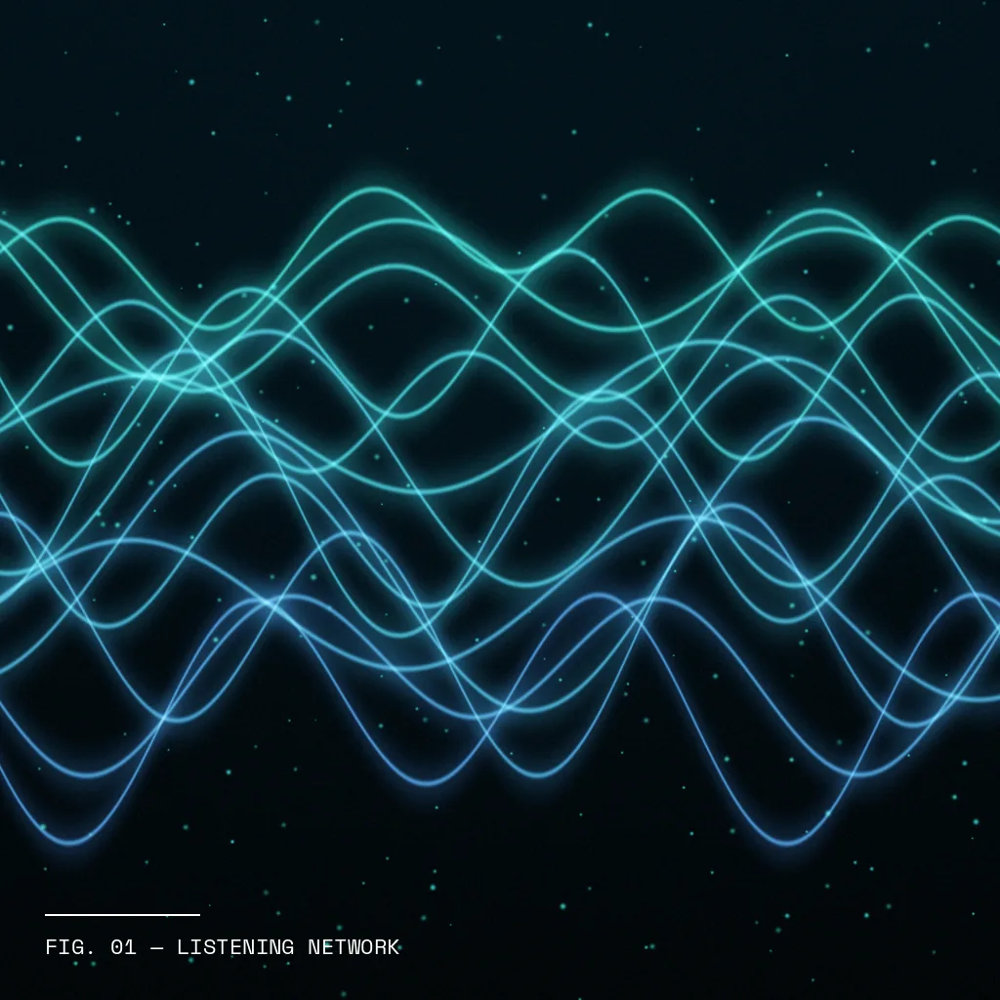
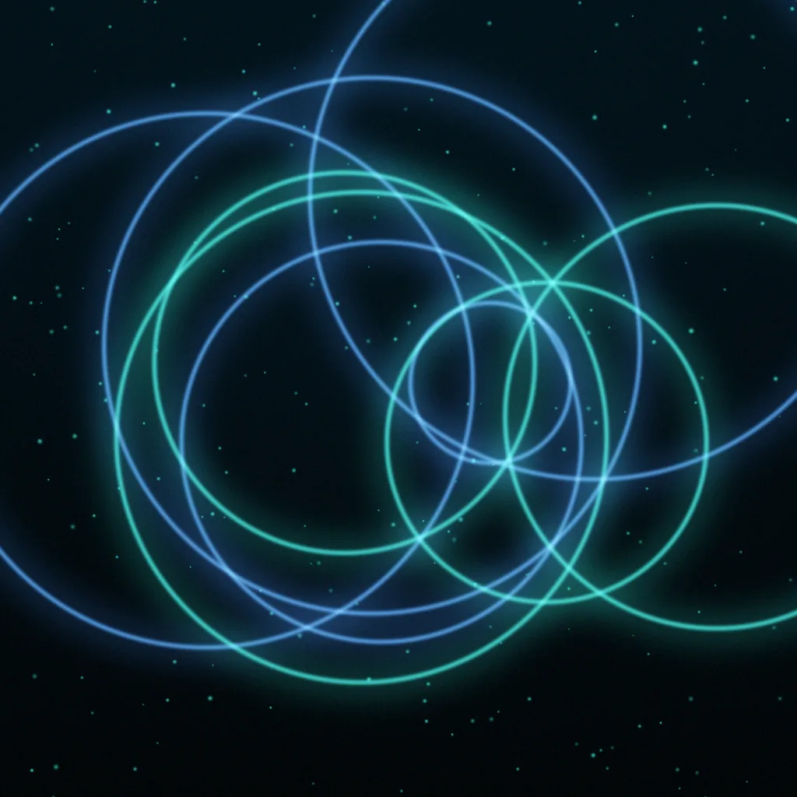
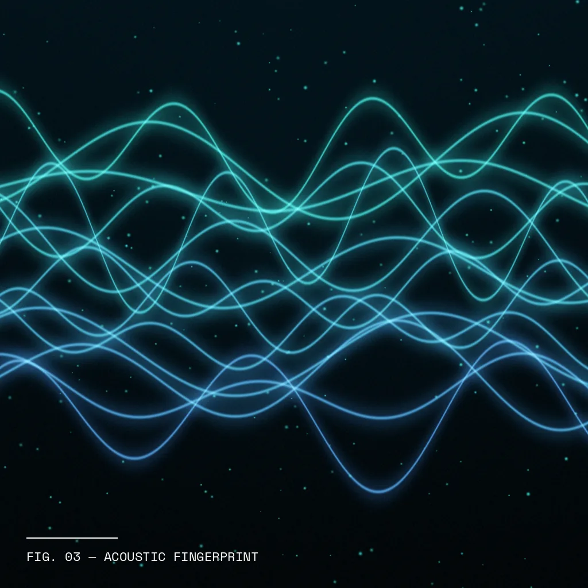
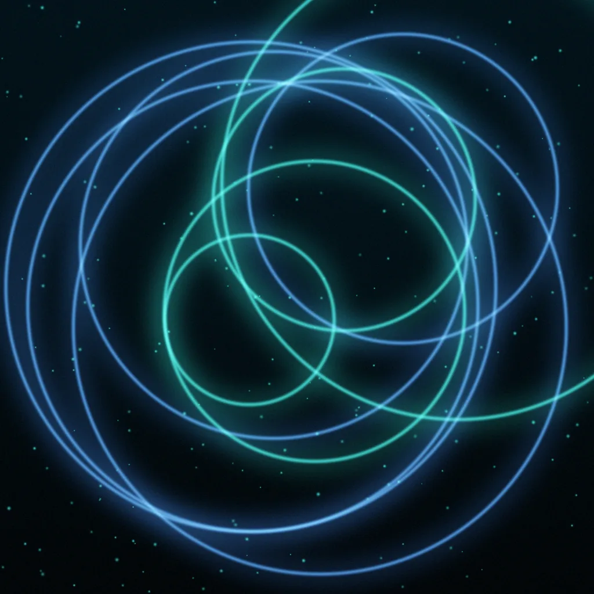
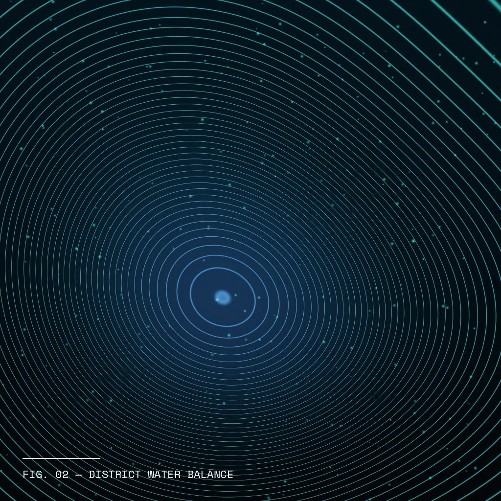

Tidewell recovered $180K in lost water by listening to its own pipes. See how acoustic AI keeps 15 towns supplied, compliant, and leak-aware.


Tidewell is a member-owned water co-operative supplying 15 coastal towns. Their mission: clean, affordable water, without wasting a drop of what they treat and pump.
Despite decades of careful stewardship, Tidewell faced hidden losses that threatened supply, budgets and crew wellbeing.
Treated, pumped water vanished underground before it ever reached a tap.
Crews walked 500+ km of mains by ear, losing 20+ hours a week each.
Paper logs led to error-prone leak reports and regulatory risk.
Bursts that started after hours ran unnoticed until morning.
"We're water people, not detectives. Every hidden leak is wasted energy and chemicals, and our crews are exhausted. Scaling means smarter networks, not more shovels."Network Operations Lead Head of Network Operations, Tidewell
We clipped low-power listeners onto the pipes and trained models that don't just hear noise—they understand it.

"Sensor 214 hears a steady hiss near Harbour Road—2.1 kHz for 40 minutes. Confidence 92%."
"Could it just be the pump station? It's been noisy all week..."
"Good thought—I checked. The pump signature is different. Shall I book a crew for 6 AM and text the 40 homes on that main?"
Anomaly Detection ActiveModels tuned to tell leaks from traffic, pumps and rain—quietly, all night.
Only pipe acoustics are captured—no voices, no households. The only leaks we find are in pipes.
Ranks bursts by risk and escalates to on-call engineers when it matters.
Integrations for work orders, GIS maps and customer notifications.
With engineers stepping in for the tricky 15%
Clip-on sensors stream pipe sounds to an edge model every night
"Water off on your street 9–11 AM for a repair" texts, sent only to affected homes
99% sensor uptime with district-level loss tracking
Measurable outcomes that prove the power of a network that listens.
62% less water lost, freeing capacity for thousands more homes.
Water that used to soak into the ground now reaches taps.
With 85% pinpointed to within two metres.
Per crew, redirected to proactive pipe renewal.
Quicker from first hiss to fixed pipe.
Trust rose as outages became shorter and were announced in advance.
Turnover dropped as 3 AM call-outs became rare.

"I got a text before the water went off, and it was back on before lunch. I didn't even know my street had a leak."— Anonymous Resident Survey Response
Our dashboard gives you complete visibility into sensor health, district water balance, and crew efficiency—all in one place.

Acoustic AI shines solo, but pairs with smart meters and pump-energy tracking for a truly circular utility. From pipes to pumps to people—we've got every loop covered.
Start Your Free Audit